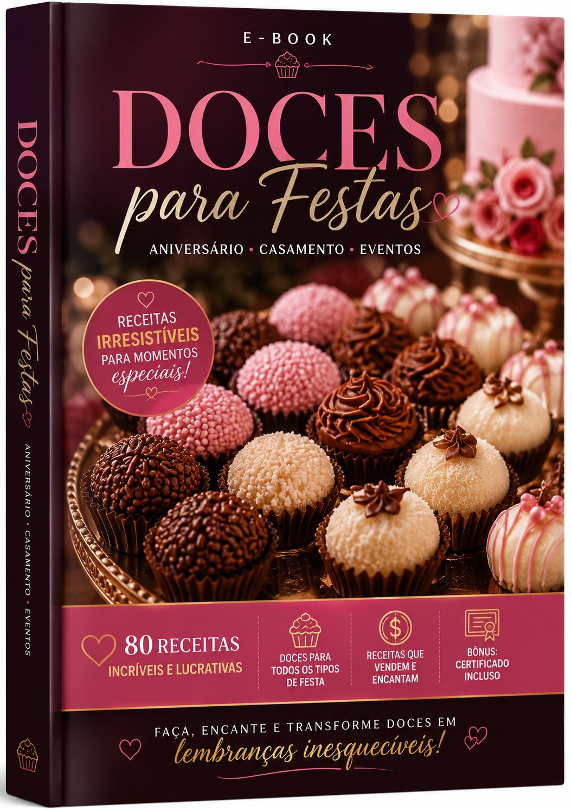

80 Receitas Irresistíveis para Você Lucrar em Casa
Olá, sou Carolina Ribeiro, criadora da Delícias na Hora.
Minha história na confeitaria começou de forma simples: uma vontade de empreender, uma batedeira e uma cozinha modesta. Passei madrugadas testando receitas, errei muitas vezes, aprendi com cada erro, e transformei esse conhecimento em um negócio real.
Com dedicação, meu trabalho chegou ao iFood, onde conquistei clientes fiéis. Mas eu sabia que podia ir além — comecei a ensinar outras mulheres que queriam empreender na confeitaria.
Já ajudei centenas de alunas a dar o primeiro passo. Este ebook reúne o melhor do meu conhecimento para que você também transforme sua cozinha em uma fonte de renda!
⭐ São 80 receitas testadas, do clássico ao gourmet!
Ingredientes baratos que você encontra na Hortmart — gastando pouco, lucrando muito!
Receitas passo a passo
Modo de preparo detalhado, com dicas de conservação e rendimento. Ideal para iniciantes.
Do clássico ao gourmet
Brigadeiro, beijinho, trufas, pudins, tortas, mousses, pavês e muito mais!
Quem quer começar a fazer doces para vender
Donas de casa que buscam uma renda extra
Quem já faz doces mas quer diversificar o cardápio
Quem quer trabalhar de casa, sem patrão
Confeiteiras que buscam receitas testadas e aprovadas
80 receitas de docinhos com passo a passo completo
Pagamento 100% seguro • Acesso vitalício • PDF para baixar
Após a confirmação do pagamento, você recebe um link para baixar o PDF direto no seu e-mail.
Não! As receitas são explicadas passo a passo, com ingredientes simples. Ideal para iniciantes.
Sim! Todas as 80 receitas foram testadas e aprovadas. Você não vai errar.
Sim! Se por algum motivo você não ficar satisfeita, devolvemos 100% do seu dinheiro.